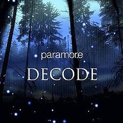

This website is created and submitted to Mr. Cadano, in partial fulfillment for the requirements in the subject "Introduction to Computing".
This website is for educational purposes only. All music, images, and information belong to their respective owners. This website is not affiliated with or endorsed by any of the artists or organizations featured.
ABOUT ME
Hi! I'm Merl, a first-year Computer Science student at the Pamantasan ng Lungsod ng Maynila.
I have zero knowledge at coding, but I have a dream and I want to be rich.
I hope you like my work!
CLICK TO NAVIGATE
Decode
Song By: Paramore

LYRICS
How can I decide what's right?
When you're clouding up my mind
I can't win your losing fight
All the time
Nor could I ever own what's mine
When you're always taking sides
But you won't take away my pride
No, not this time
Not this time
How did we get here
When I used to know you so well?
How did we get here?
Well, I think I know
The truth is hiding in your eyes
And it's hanging on your tongue
Just boiling in my blood
But you think that I can't see
What kind of man that you are
If you're a man at all
Well, I will figure this one out
On my own
(I'm screaming, I love you so)
On my own
(But my thoughts you can't decode)
(repeat)
Do you see what we've done?
We're gonna make such fools of ourselves
Do you see what we've done?
We're gonna make such fools of ourselves
Yeah, yeah
(repeat)
I think I know
I think I know
There is something I see in you
It might kill me, I want it to be true
MEANING
"Decode" is an alternative rock and emo song written by Hayley Williams, Josh Farro,
and Taylor York specifically for the Twilight film.
Hayley Williams explained how the song's title and lyrics were inspired by the complicated relationship
between the book's protagonists:
"I chose the title "Decode" because the song is about the building tension, awkwardness, anger and confusion
between Bella and Edward. Bella's mind is the only one which Edward can't read and I feel like that's a big
part of the first book and one of the obstacles for them to overcome. It's one added tension that makes the story even better."